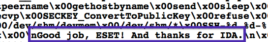

FRONT-END BACK-END
+---------------+ +---------------+ +-------------------+
| | | +---> | Autounattend.xml |
| +-> | packer | +-------------------+
| | | +-+
| | +---------------+ | +--------------------+
| malboxes.py | +-> | |
| | +---------------+ | PowerShell|
| | | | | WinRM winrmcp |
| +-> | vagrant +---> | Shell |
| | | | | Chocolatey|
+---------------+ +---------------+ +--------------------+
+------------------------------------------+
| |
| VirtualBox / vSphere (ESXi) / KVM |
| |
+------------------------------------------+Malboxes
Making Malware Analysis More Accessible
$ whoami
Cybersecurity Researcher at GoSecure+CounterTack
3rd time speaking at SecTor over the last 4 editions
Co-founder Montrehack (hands-on security workshops)

VP Training and Hacker Jeopardy at NorthSec
Agenda
Problem space
Malboxes
Demo
Future work
Problem Space
Context
Current toolchain (customization)
Vanilla Windows 7 VMs (or more recent versions)
No trace of a previous user
Manual customization
Can lead to cross-infected VMs
Can’t build or reuse templates
Also time consuming
Problems of malware analysis
Not accessible to newcomers
Easy to mess things up
Team work is hard (tools don’t encourage it)
Building a credible environment is time consuming
Ways to mess things up

Also, dealing with VM problems
Recent Opportunities
DevOps
Why would the devops people have all the fun?

Inspiration
Malboxes
Architecture
Batteries included
Tools automatically installed based on profiles
all sysinternal tools
windbg
putty
fiddler
wireshark
Dealing with VM problems
How can I get this?
pip3 install git+https://github.com/GoSecure/malboxes.git#egg=malboxesRecent releases
0.3.0
Windows 7 x86 and x64 templates
ESXi / vSphere support
Added concept of profiles (experimental)
0.4.0
Improved profiles (experimental)
Continuous build system
Configure mandatory proxy in the VM
Fixes
How does it work?
Check available templates
$ malboxes list
Builds the Vagrant box
$ malboxes build <template>
Spin a
Vagrantfilefor each of your analysis then launch$ malboxes spin $ vagrant up
Available Templates
win10_32_analyst
win10_64_analyst
win7_32_analyst
win7_64_analyst
Profiles
Additional configuration to customize one box even further
Available commands
shortcut
registry
package
document
directory
packer
Result
Useful for
Reduce art, augment science
Get new people into malware analysis
Centralize / standardize VM creation in teams
Demo
Future work
Where is this headed?
Implement anti-{VM,sandbox} detection
Sysmon integration
Manage the network isolation with subcommands
Ansible for provisioning
Rework the approach to configuration
the Docker opportunity
Docker happened
Depart from the one global config
Focus on multi-machine and config stacking
Malboxfile
client:
os: windows7_64
# product_key: abcd-efgh-ijkl
network: fakenet
defender: false
windows_updates: false
packages: [wireshark, x64dbg.portable, sysinternal]
powershell:
- script1.ps1: [with, arguments]
domain: example.com
server:
os: windows_server_2016
defender: true
domain: example.comExpand to other use cases
RDP Honeypots
Multi-machine Labs
More Back-Ends
KVM / QEMU (already in progress)
Proxmox
The Ecosystem
Flare-VM
OALabs-VM
The Struggles
Long test cycles due to Windows installs
Hard to debug
Chocolatey fails a lot
Help Wanted!
Let’s get to work!

Questions?

Big Thanks to all contributors!
Hugo Genesse, Gregory Leblanc, @snakems, @pix, Camille Moncelier, @xambroz, @malwarenights, Mathieu Tarral